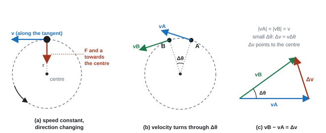

Circular Motion
Anything moving in a circle is accelerating, even if its speed never changes, because its direction is changing all the time. That acceleration points at the centre of the circle, and it needs a resultant force pointing at the centre too. In this topic we measure angles in radians, describe spinning with angular velocity, derive the centripetal acceleration from a vector diagram, and then use \(F = mv^2/r\) for cars on bends, balls on strings and roller coasters.
Spec87Angular displacement: radians and degrees
Express angles in radians and degrees, and convert between them.
The radian
- Angular displacement θ is the angle turned through about the centre.
- One radian is the angle at the centre of a circle when the arc length equals the radius. In general:
Angle in radians
- A full circle: arc = 2πr, so 360° = 2π rad. Half a turn = π rad; a quarter turn = π/2 rad; 1 rad ≈ 57.3°.
| Degrees | 30° | 45° | 60° | 90° | 180° | 360° |
|---|---|---|---|---|---|---|
| Radians | π/6 | π/4 | π/3 | π/2 | π | 2π |
Converting
Converting between degrees and radians
from degrees to angular speed
A ride turns through 160° in 2.2 s. Find its angular speed.
θ = 160 × 2π/360 = 2.79 rad
ω = θ/t = 2.79 ÷ 2.2 = 1.3 rad s⁻¹
Other route: one full turn takes 360/160 × 2.2 = 4.95 s = T, so ω = 2π/T = 1.3 rad s⁻¹.
Going back the other way: 1.3 rad = 1.3 × 360/2π = 74°.
- Both routes score: convert to radians then ω = Δθ/Δt, or find the period by proportion then ω = 2π/T.
- Unit "rad s⁻¹" (or "radian s⁻¹").
Often asked as: a fraction of a turn (quarter circle = 2πr/4 of arc), time to turn through a given angle, MCQ conversions (40° = 40 × 2π/360 rad).
Not turning 90° into a quarter of a circle, or applying an extra factor of 4.
Multiplying a value that is already in radians by π again.
Leaving the calculator in degree mode when taking sin or cos of an angle in radians.
Units of ω as m s⁻¹ or "degrees per second".
Spec88Angular velocity, speed and period
Understand angular velocity and use v = ωr and T = 2π/ω.
Definitions
- Angular velocity ω is the rate of change of angular displacement: ω = Δθ/Δt, unit rad s⁻¹.
- For one full turn, Δθ = 2π in one period T, so:
Angular velocity and period
Linear speed
In a short time \(\Delta t\) the object turns through an angle \(\Delta\theta\). By the definition of angular velocity:
\[ \Delta\theta = \omega\,\Delta t \]The distance travelled along the circle is the arc length. From the definition of the radian, \(s = r\theta\):
\[ \Delta s = r\,\Delta\theta = r\,\omega\,\Delta t \]Speed is distance divided by time:
\[ v = \frac{\Delta s}{\Delta t} = \frac{r\,\omega\,\Delta t}{\Delta t} \quad\Rightarrow\quad \boxed{v = \omega r} \]This only works with \(\omega\) in radians per second, because \(s = r\theta\) is only true in radians.
- v = linear (tangential) speed (m s⁻¹), r = radius (m), T = period (s), f = frequency (Hz, revolutions per second).
- v = ωr comes from s = rθ: dividing by t gives v = rω.
- All points on a rigid rotating object have the same ω, but points further out have a larger v.
a washing-machine drum
The drum spins at 1400 revolutions per minute and has a diameter of 0.50 m. Find ω and the speed of the drum wall.
f = 1400 ÷ 60 = 23.3 Hz (revolutions per second)
ω = 2πf = 2π × 23.3 = 147 rad s⁻¹
r = 0.50 ÷ 2 = 0.25 m, so v = ωr = 147 × 0.25 = 37 m s⁻¹
The Earth turns once every 24 hours. Its radius is \(6.37 \times 10^6\ \text{m}\). Calculate (a) the Earth's angular velocity, (b) the speed of a person on the equator, and (c) the speed of a person in London, at latitude 51.5°.
Show solution
(a) Convert the period to seconds: \(T = 24 \times 3600 = 86\,400\ \text{s}\).
\[ \omega = \frac{2\pi}{T} = \frac{2\pi}{86\,400} = 7.27 \times 10^{-5}\ \text{rad s}^{-1} \](b) On the equator the radius of the circle is the Earth's radius:
\[ v = \omega r = 7.27\times10^{-5} \times 6.37\times10^{6} = 463\ \text{m s}^{-1} \](c) In London you travel round a smaller circle, whose radius is the distance from the Earth's axis: \(r = R\cos 51.5^\circ = 6.37\times10^6 \times 0.623 = 3.97\times10^{6}\ \text{m}\). The angular velocity is the same:
\[ v = 7.27\times10^{-5} \times 3.97\times10^{6} = 288\ \text{m s}^{-1} \]Both of you go round once a day (same \(\omega\)), but the person on the equator has further to go.
A washing machine drum of radius 0.25 m spins at 1200 revolutions per minute. Calculate the speed of a sock pressed against the drum wall and its centripetal acceleration. How many times larger than \(g\) is this?
Show solution
Convert rpm to rad s⁻¹: each revolution is \(2\pi\) rad, and there are 60 s in a minute.
\[ \omega = \frac{1200 \times 2\pi}{60} = 126\ \text{rad s}^{-1} \] \[ v = \omega r = 126 \times 0.25 = 31.4\ \text{m s}^{-1} \] \[ a = r\omega^2 = 0.25 \times 126^2 = 3.9 \times 10^{3}\ \text{m s}^{-2} \approx 400\,g \]The drum wall pushes the sock towards the centre with a huge force. Water in the sock is not held by the wall at the holes, so it carries on in a straight line, out through the holes.
- "Use of ω = 2π/T" and "use of v = ωr" are separate method marks.
- ω needs the unit rad s⁻¹ (s⁻¹ is accepted in a derivation).
Often asked as: ω from a period or rpm, v from ω, time for part of a turn, the first step of a centripetal force calculation.
Using the diameter as the radius: the most-quoted error in the examiner reports.
Writing ω = vr instead of v = ωr.
Forgetting to change revolutions per minute to per second.
Leaving the answer in terms of π.
Examined in past papers even though the spec doesn't list it.
A coil rotating at ω in a magnetic field gives a peak e.m.f. of BANω. Halving ω doubles the period and halves the peak e.m.f. (WPH14 Jan 2020; see 110).
Spec89Centripetal acceleration and its derivation
Use vector diagrams to derive a = v²/r = rω², and use these equations.
Why there is an acceleration
An object moving in a circle at constant speed is still accelerating, because its velocity (a vector) keeps changing direction. The acceleration points towards the centre: it is called centripetal acceleration.

The derivation (4 marks, often asked)
- The object moves from A to B in a short time Δt. The radius turns through angle Δθ, and so does the velocity: vA and vB have the same size v but differ in direction by Δθ.
- Draw the vector triangle: vB − vA = Δv (vA and vB from a common point; Δv joins the tip of vA to the tip of vB).
- For a small angle, the triangle's short side is almost an arc of radius v, so Δv ≈ vΔθ (Δθ in radians).
- Acceleration a = Δv/Δt = v(Δθ/Δt) = vω.
- Substitute ω = v/r or v = ωr:
Centripetal acceleration
An object moves round a circle of radius \(r\) at constant speed \(v\). In a short time \(\Delta t\) it moves from A to B, and the radius turns through a small angle \(\Delta\theta\). The velocity is always at 90° to the radius, so the velocity also turns through \(\Delta\theta\):
\[ |v_A| = |v_B| = v, \qquad \text{angle between } v_A \text{ and } v_B = \Delta\theta \]The change in velocity is \(\Delta v = v_B - v_A\). Draw \(v_A\) and \(v_B\) tail to tail: \(\Delta v\) is the arrow from the tip of \(v_A\) to the tip of \(v_B\). This is an isosceles triangle with two sides of length \(v\) and the angle \(\Delta\theta\) between them.
By symmetry, \(\Delta v\) is perpendicular to the line halfway between \(v_A\) and \(v_B\), so it points along the radius at the midpoint of the arc, towards O.
When \(\Delta\theta\) is small, the short side of the triangle is almost the same as an arc of a circle of radius \(v\). Arc length = radius × angle, so
\[ |\Delta v| \approx v\,\Delta\theta \]Acceleration is change in velocity over time:
\[ a = \frac{|\Delta v|}{\Delta t} = v\,\frac{\Delta\theta}{\Delta t} = v\,\omega \]\(\Delta\theta / \Delta t\) is the angular velocity \(\omega\).
From \(v = \omega r\), \(\omega = v/r\). Substitute:
\[ a = v \times \frac{v}{r} \quad\Rightarrow\quad \boxed{a = \frac{v^2}{r}} \]As \(\Delta t \to 0\), A and B merge, the approximation in step 3 becomes exact, and \(\Delta v\) points exactly at the centre. The acceleration is directed towards the centre of the circle: it is centripetal ("centre-seeking").
Start from the result we just derived:
\[ a = \frac{v^2}{r} \]Substitute \(v = \omega r\):
\[ a = \frac{(\omega r)^2}{r} = \frac{\omega^2 r^2}{r} \quad\Rightarrow\quad \boxed{a = r\omega^2} \]Step 4 of the previous derivation also gave the handy middle form \(a = v\omega\).
- a = centripetal acceleration (m s⁻²), v = speed (m s⁻¹), r = radius (m), ω = angular velocity (rad s⁻¹).
- As Δθ → 0, Δv becomes perpendicular to v, so a points along the radius towards the centre.
a car on a roundabout
A car goes round a curve of radius 40 m at 15 m s⁻¹.
a = v²/r = 15² ÷ 40 = 5.6 m s⁻² towards the centre of the curve.
ω = v/r = 15 ÷ 40 = 0.375 rad s⁻¹; check: rω² = 40 × 0.375² = 5.6 m s⁻² ✓
The four marks:
- "Correct vector diagram showing the velocity change" (vA, vB, Δv and the angle Δθ, all with arrows).
- "Small angle, so Δθ = Δv/v" (or "sin θ ≈ θ", or "arc ≈ chord").
- "Use of Δθ/Δt = ω and v = rω".
- "Algebra to show a = v²/r" (with a = Δv/Δt).
A similar-triangles route also scores: Δv/v = Δs/r with Δs/Δt = v.
Often asked as: the derivation on its own; MCQ on which arrow is Δv; using a = v²/r inside a force question.
Diagram with no arrows, or with arrows that don't fit vB − vA = Δv.
Not saying why the angle must be small (a 90° angle is not "small").
Missing the step Δθ = ωΔt.
Spec90A resultant force is needed for circular motion
A resultant (centripetal) force is needed to produce and keep up circular motion.
Newton's laws applied to circles
- First law: with no resultant force, an object moves in a straight line at constant speed. To make it follow a curve, something must push or pull it sideways.
- Second law: the object accelerates towards the centre, so the resultant force must also point towards the centre. This resultant is called the centripetal force.
- The force is perpendicular to the velocity, so it does no work: the speed stays constant, only the direction changes.
- If the force stops, the object carries on along the tangent, not outwards.
"Centripetal force" is not an extra force
It is the name for the resultant of the real forces. Always say what provides it:
| Situation | What provides the centripetal force |
|---|---|
| Ball whirled on a string, hammer throw | tension in the string/wire |
| Car on a flat bend | friction between tyres and road |
| Car on a banked track, aircraft banking | horizontal component of the normal reaction / lift |
| Conical pendulum | horizontal component of the tension |
| Satellite, Moon | gravitational pull of the Earth |
| Electron orbiting a nucleus | electrostatic (Coulomb) attraction |
| Charged particle in a magnetic field | magnetic force BQv |
| Passenger in a turning car or ride | push from the seat, door or wall |
Vertical circles
- At the top, weight and the push (or tension) both point to the centre: mg + R = mv²/r.
- At the bottom, the push (or tension) points up and the weight down: R − mg = mv²/r, so R is largest at the bottom.
- The minimum speed at the top is when R (or T) just reaches zero: mg = mv²/r, so vmin = √(gr).
A roller coaster car (total mass 500 kg) enters a vertical loop of radius 8.0 m at 22 m s⁻¹ at the bottom. Ignore friction. (a) What is the minimum speed needed at the top? (b) Find the speed at the top. (c) Find the normal contact force from the track on the car at the top. (d) What force does the seat exert on a 60 kg rider at the bottom?
Show solution
(a) At the minimum speed the track exerts no force and weight alone provides the centripetal force:
\[ v_\text{min} = \sqrt{gr} = \sqrt{9.81 \times 8.0} = 8.86\ \text{m s}^{-1} \](b) The top is \(2r = 16\ \text{m}\) above the bottom. Energy is conserved, so \(\tfrac12 mv_\text{top}^2 = \tfrac12 mv_\text{bottom}^2 - mg(2r)\). Cancel \(m\):
\[ v_\text{top}^2 = 22^2 - 2 \times 9.81 \times 16 = 484 - 314 = 170, \qquad v_\text{top} = 13.0\ \text{m s}^{-1} \](c) At the top, the normal force \(N\) and the weight both point down, towards the centre:
\[ N + mg = \frac{mv^2}{r} \quad\Rightarrow\quad N = \frac{500 \times 170}{8.0} - 500 \times 9.81 = 10\,600 - 4900 = 5.7 \times 10^{3}\ \text{N} \](d) At the bottom the seat pushes up and the weight acts down:
\[ N = mg + \frac{mv^2}{r} = 60 \times 9.81 + \frac{60 \times 22^2}{8.0} = 589 + 3630 = 4.2 \times 10^{3}\ \text{N} \]Passenger who "feels pushed outwards" (three marks):
- "By Newton's first law the passenger would continue in a straight line."
- "A (centripetal) force acts towards the centre of the circle."
- "This force is exerted by the car / seat on the passenger; there is no outward force."
Free-body diagrams: label weight "W, mg or gravitational force", tension "T", normal reaction "R" or "N". Do not add a "centripetal force" arrow.
Thrown from a circle: the object leaves "at a tangent" ("shoots away" scores nothing).
Often asked as: free-body diagrams for banked tracks, conical pendulums, vertical circles; why the reaction force changes round a loop; why water stays in a bucket at the top.
Drawing "centripetal force" as an extra arrow on a free-body diagram.
Inventing a "centrifugal force" as the Newton's third law pair of the centripetal force. The third-law partner of the seat pushing you is you pushing the seat.
Saying only "at right angles to the motion" without "towards the centre".
Labelling forces with vague letters like F or G.
Examined in past papers even though the spec doesn't list it.
- Variation of the normal reaction around a vertical loop, read from an accelerometer trace on a roller coaster (WPH14 Jun 2023, 6-mark).
- Objects on a turntable: friction ∝ mass and centripetal force ∝ mass, so the radius at which things slide does not depend on mass (WPH14 Jun 2025).
Spec91Centripetal force equations
Use F = ma = mv²/r = mrω² for the centripetal force.
Centripetal force
- F = resultant (centripetal) force (N), m = mass (kg), v = speed (m s⁻¹), r = radius (m), ω = angular velocity (rad s⁻¹).
- Combine with ω = 2π/T when you are given a time for one turn.
Method for angled forces
- Draw a free-body diagram with the real forces only.
- Resolve vertically: no vertical acceleration, so the vertical components balance the weight.
- Resolve horizontally: the horizontal component is the centripetal force mv²/r.
- Divide one equation by the other to cancel the unknown force. For a banked track or a banking aircraft this gives tan θ = v²/rg.
- For a pendulum on a string of length l at angle θ to the vertical, the radius is r = l sin θ.
conical pendulum
A 0.20 kg bob on a 0.80 m string moves in a horizontal circle with the string at 30° to the vertical. Find the tension and ω.
Vertically: T cos 30° = mg → T = 0.20 × 9.81 ÷ cos 30° = 2.3 N
Radius: r = l sin θ = 0.80 × sin 30° = 0.40 m
Horizontally: T sin 30° = mrω² → ω² = (2.27 × 0.5) ÷ (0.20 × 0.40) = 14.2 → ω = 3.8 rad s⁻¹
banked track
A track of radius 120 m is designed so cars at 25 m s⁻¹ need no friction. Find the banking angle.
R cos θ = mg and R sin θ = mv²/r. Divide: tan θ = v²/rg = 25² ÷ (120 × 9.81) = 0.531
θ = 28°
vertical circle
A 0.50 kg ball on a string of radius 0.90 m moves at 4.0 m s⁻¹ at the bottom of a vertical circle. Find the tension there.
T − mg = mv²/r → T = 0.50 × 9.81 + 0.50 × 4.0² ÷ 0.90 = 4.91 + 8.89 = 14 N
Minimum speed at the top (T = 0): v = √(gr) = √(9.81 × 0.90) = 3.0 m s⁻¹
A 0.20 kg puck on a frictionless table is whirled in a horizontal circle of radius 0.50 m on a string, making 2.0 revolutions per second. (a) Calculate the tension in the string. (b) The string snaps at 25 N. What is the greatest number of revolutions per second it can make?
Show solution
(a) \(\omega = 2\pi f = 2\pi \times 2.0 = 12.6\ \text{rad s}^{-1}\). The tension is the only horizontal force, so it is the centripetal force:
\[ T = mr\omega^2 = 0.20 \times 0.50 \times 12.6^2 = 15.8\ \text{N} \](b) Rearrange for \(\omega\) with \(T = 25\ \text{N}\):
\[ \omega = \sqrt{\frac{T}{mr}} = \sqrt{\frac{25}{0.20 \times 0.50}} = 15.8\ \text{rad s}^{-1}, \qquad f = \frac{\omega}{2\pi} = 2.5\ \text{revolutions per second} \]A car of mass 1200 kg goes round a flat bend of radius 50 m at 15 m s⁻¹. (a) What friction force is needed? (b) The greatest friction the road can provide is 7200 N. What is the maximum safe speed?
Show solution
\[ F = \frac{mv^2}{r} = \frac{1200 \times 15^2}{50} = 5400\ \text{N} \](b) Rearrange with \(F = 7200\ \text{N}\):
\[ v = \sqrt{\frac{Fr}{m}} = \sqrt{\frac{7200 \times 50}{1200}} = 17.3\ \text{m s}^{-1} \]Only 15% faster than before uses up all the grip, because \(F \propto v^2\): \(1.15^2 \approx 1.33\), and \(5400 \times 1.33 = 7200\).
- Separate marks for "resolve vertically" and "resolve horizontally", then "use of F = mv²/r", then "use radius = l sin θ".
- Steeper bank than the design angle: "vertical component of lift is now greater than the weight, so the plane accelerates upwards".
- Comparison with a limit: "T = 31 N, less than the 35 N breaking tension, so the wire does not break".
Often asked as: banked tracks and aircraft, conical pendulums, wire tension in a hammer throw (Pythagoras of mv²/r and mg), minimum speed at the top of a vertical circle, reading a maximum force off a graph to find r.
Taking the string length as the radius, or using tan where sin is needed for r.
Multiplying by cos θ when you should divide (T = mg/cos θ, not mg cos θ).
Jumping straight to tan θ = v²/rg without showing the two components: derivations need both equations.
Mixing up which component is vertical and which horizontal.
In a "show that" for circular motion, give your answer to one more significant figure than the value printed in the question. A typical chain: ω = 2π/T → v = ωr → F = mv²/r.
Quick checks
What is 1.5 rad in degrees?
\(1.5 \times \dfrac{180}{\pi} = 85.9^\circ\). Quick check: 1 rad is about 57°, so 1.5 rad is a bit less than 90°. 0.026 is what you get converting the wrong way.
A car drives round a roundabout at a constant speed. Which statement is correct?
The direction of the velocity keeps changing, so the car accelerates, towards the centre, with \(a = v^2/r\). The resultant force points the same way as the acceleration: inwards.
Two children sit on a spinning roundabout, one 1.0 m from the centre and one 2.0 m from the centre. Compared with the inner child, the outer child has
They go round together, so \(\omega\) is the same. \(v = \omega r\) doubles, and \(a = r\omega^2\) also doubles (not halves).
A car goes round a bend of fixed radius. If its speed doubles, the friction force needed
\(F = mv^2/r\), so \(F \propto v^2\): \(2^2 = 4\).
A ball on a string is swung in a vertical circle. Where is the tension in the string greatest?
At the bottom the ball is fastest, so it needs the most centripetal force, and the string must also cancel the weight: \(T = mg + mv^2/r\).
A puck whirled in a horizontal circle on a frictionless table is moving due north when the string breaks. Which way does it move next?
Once the string breaks there is no horizontal force, so by Newton's first law it carries on in a straight line with the velocity it had at that instant, which was along the tangent.